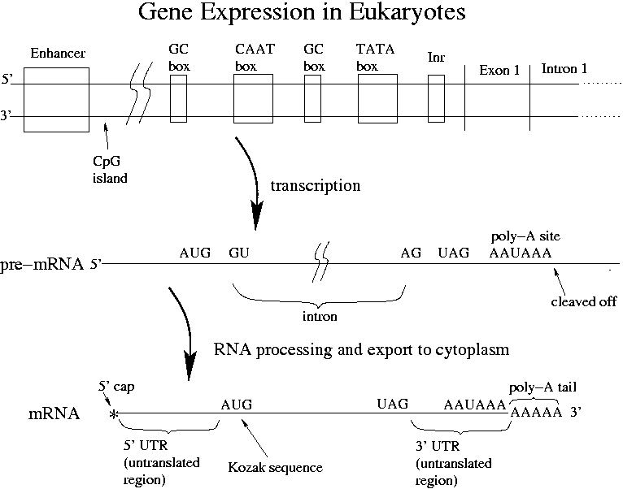

Day 10 Afternoon Lecture Notes
Steve Williams, Smith College
June 15, 2004

UGA, UAG, UAA are eukaryotic stop codons, the same as in prokaryotes. CCRCCAUGG = the Kozak sequence, where R is a purine (A or G). The Kozak sequence is the eukaryotic ribosome binding site. In prokaryotes the RNA polymerase binds to the promoter. In eukaryotes other additional proteins called transcription factors must bind at the same time. Transcription factors are the most important regulatory elements in multi-tissued organisms. Transcription factors bind to boxes in the promoter and form a basket than can catch RNA polymerase. If just a one TF is bound to the TATA box, just a little transcription occurs. Different transcription factors are found in different species. The number of TFs in humans is unknown.
Enhancers also bind to TFs. Enhancers can be a few hundred or a few thousand bp upstream, downstream or in the middle of an intron. Upstream is the most common placement. How does a TF bound so far away affect transcription? When TF binds at an enhancer, DNA bends over and the TF forms part of the polymerase-catching basket. Some of the boxes found in enhancers are the same as those found in the promoter. Enhancers can increase transcription by 1000x.
Most genes have a TATA box. GC and CAAT boxes are less ubiquitous. "There are no motifs that are consistent in all eukaryotic promoters."
Promoters and enhancers determine temporal and tissue-specific differentiation of cells. Steroids are one kind of TF. Some TFs don't bind to DNA but instead bind to each other. The promoter boxes are also sometimes called "response elements." Genes that are co-regulated tend to have similar promoters.
Given the complexity of regulation with TFs coded for by genes, how can we possibly have only 30,000 genes? One answer is "alternative splicing" whereby a few exons can be omitted during transcription. Some genes have as many as 50 distinct transcripts. Note that the order of exons is always preserved.
In eukaryotes the RNA polymerase II will bind in the basket and transcribe down the gene until eventually it falls off - there is no terminator. The resulting pre-mRNA must:
The 5' cap helps a ribosome recognize the mRNA. In mammals many mRNAs have a "Kozak sequence" where ribosomes can bind. How else ribosomes might bind in eukaryotes is unknown. As in prokaryotes, multiple translations of the mRNA can occur at once. Translation takes about 1 minute. From transcription initiation to translation to finish can take 10 minutes total.
The 5' cap and poly-A tail help to stabilize the mRNA. The tail has 20-200 A's. The CpG island regulates whether an entire region of a gene is available for transcription. 40% of mammalian genes contain them. These regions are often > 500 bp long and are very GC-rich.
In prokaryotes, the ribosomes grab mRNA as soon as it's synthesized. In eukaryotes mRNAs have plenty of time to fold on their way out to the cytoplasm. The 3D structure of mRNAs may regulate translation in eukaryotes. For example, a start codon may sometimes be hidden inside the folded structure or translation may start at different places if different start codons are exposed.
People often want their gene expressed in E. coli in order to make a drug, study enzyme kinetics or to get enough protein to perform x-ray crystallography. Transcription and translation can be done in vitro without a vector for biochemical studies, but are very slow under those circumstances.
Putting a different dye on each of the four dNTPs allows rapid sequencing in a single tube. The resulting data plot is called a chromatogram. Alternatively just a "text sequence" may be used. Examination of the chromatogram is better since the reliability of the data can be better judged. The broad peaks at the end of a chromatogram are due to the deterioration of the gel after many bases have passed through it. A longer-lasting gel would be very valuable! Peak heights throughout the chromatogram are uneven due to unequal sequence-dependent incorporation of fluorescently labeled ddNTPs. In particularly ugly-looking sections of a plot, the sequencing software may not be able to call a particular base. A Rietveld-like approach to pattern analysis may reveal what sequence causes the particular spectral shape.
Chain termination at a particular length may be relatively improbable due to steric effects. That corresponding length will be represented by a lower fluorescence peak. The dyes are much, much larger than the ddNTPs. Polymerases had to be specially engineered to accept the dyes. The set of dyes had to have about the same molecular weight in order to run at the same speed in the gel, had to have distinctive fluorescence and had to be excited by the same laser. Most advanced dyes were developed by Amersham and licensed to Applied Biosystems. They incorporate advanced donor-linker acceptor structures to enhance sensitivity. Different dye sets are available depending on the details of a sequence. Newer dyes give more even peaks that make sequence determination easier.
"Compressions" are regions where suddenly the sequence is hard to read. These features are found in slab gels or automatic sequences at a rate of one per 200-500 bp. They have the appearance of multiple bp occurring all at once and are labeled "N" by the software. Note that when equipment vendors claim 99% accuracy, they are counting Ns as correct. This is okay since an N is more useful than an error. Compressions are places where stable secondary structures like hairpins have formed. GC-rich regions are harder to sequence since their secondary structures are more stable. While the fundamental concept of sequencing is fairly simple, getting rid of these artifacts is still tricky. Sometimes sequencing the complementary strand may be easier, although not in a GC-rich region.
To reduce compressions and false terminations: